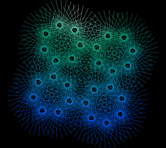
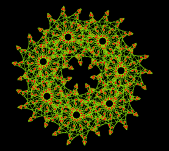
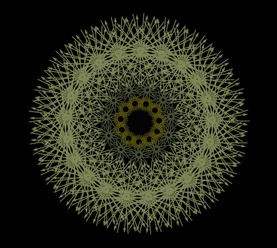
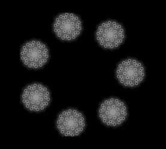
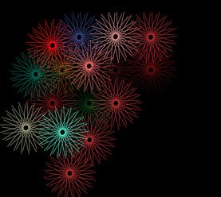
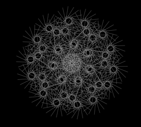

Hello, my name is Hayley and I am a student from Belfast. I am studying Interaction Design, also known as #IXD, in the University of Ulster.
Some of my favourite things include watching movies, listening to music. Spotify is the best creation ever to be invented! I love grabbing images when and where I can, images last forever. I also have a thing for Arabic language, weird yes, but Im committed. I made a point of getting a tattoo of it.
Creativity is key to me and being unique is what I love, why go with the trend? thats just boring.
In one word I would describe my work as "Random". I do what I feel at the time, the outcome is always different. However looking through my work I can see a house style developing.
As a young girl I was obsessed with spirograph and loved how the stencils created interesting, effortless patterns. This gave me inspiration. I took this element and processed it into a digital form.
I am still experimenting with my work and discovering the type of designer I want to be. I know I am going in the right direction. To view more work Just click my Flickr link below!
     